중요한 퀘스트를 완료하면 강력한 보상을 얻을 수 있습니다. 수백 개의 NPC 과제가 있고 모든 캐릭터로 퀘스트를 완료할 수 있어서 초보 플레이어는 종종 압도감을 느낍니다. 이 가이드는 각 월드의 핵심 퀘스트와 완료 횟수, 그리고 완료 방법 링크를 안내하는 로드맵입니다.
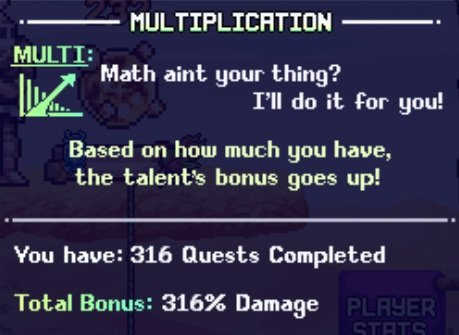
퀘스트 팁
- 1회성 퀘스트 vs 다중 캐릭터 퀘스트: 일부 퀘스트는 계정 전체에서 1회만 완료할 수 있으며, 다른 퀘스트는 모든 캐릭터로 반복 완료할 수 있습니다.
- 1회 완료: 대부분의 퀘스트는 보상이 계정 전체에 적용되는 스탬프, 창고 상자, 특수 탤런트 등이므로 1회만 완료하면 됩니다. 눈에 띄는 보상이 없는 퀘스트도 결국에는 1번씩 완료해두는 것이 좋습니다. Quest Kapow!, Studious Quester, Quest Chungus 같은 스타 탤런트(특수 탤런트)와 Tome 점수가 계정 전체에서 완료한 고유 퀘스트 수에 비례해 올라가기 때문입니다.
- 모든 캐릭터로 완료: 소수의 퀘스트는 캐릭터 인벤토리 가방, 젬, 시간 캔디, 강력한 장비 중복 획득을 위해 모든 캐릭터로 반복 완료해야 합니다.
- 새 월드 퀘스트: 각 월드의 마을 NPC는 새 월드 메커니즘을 소개하고 잠금 해제하는 환영 퀘스트를 제공합니다. 이 퀘스트 대부분은 초기 진행에 도움이 되는 해당 월드 메커니즘의 시간 스킵도 제공합니다.
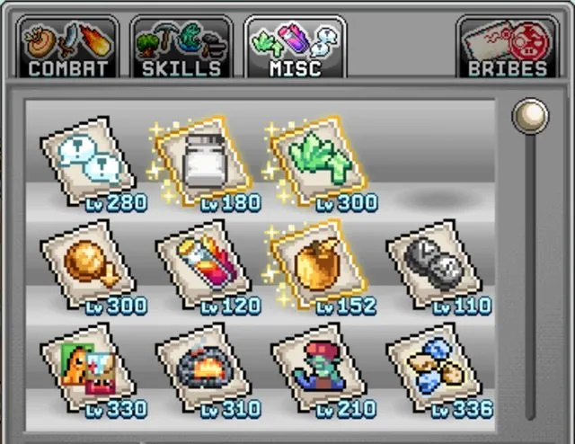
베스트 퀘스트 목록 – 스탬프 잠금 해제
스탬프는 Wizard 데미지량을 높이고 총 스탬프 레벨에 비례하는 Gilded Stamp 기능의 핵심 메커니즘입니다. 아래 퀘스트는 한 캐릭터로만 완료하면 됩니다.
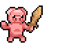
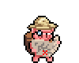
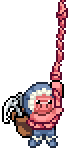
| NPC | 위치 (월드) | 보상 |
|---|---|---|
| Mr Pigibank | Blunder Hills (World 1 마을) | 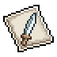  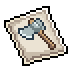 Sword, Heart, Pickaxe, Hatchet 스탬프 |
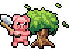 Hamish | Froggy Fields (World 1) | 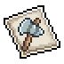 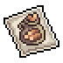 Tomahawk, Choppin' Bag 스탬프 |
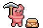 Mutton | Freefall Caverns (World 1) | 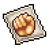 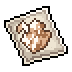 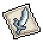  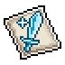 Fist, Manamoar, Scimitar, Golden Apple, Steve Sword 스탬프 |
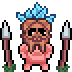 Papua Piggea | Tucked Away (World 1) | 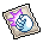  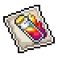 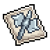 Kapow, Crystallin, Potion, Polearm 스탬프 |
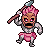 Tiki Chief | Encroaching Forest Villas (World 1) | 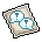 Questin 스탬프 |
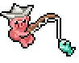 Fishpaste97 | Faraway Piers (World 2) | 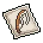  Fishing Rod, Talent S 스탬프 Fishing Rod, Talent S 스탬프 |
| XxX Cattleprod XxX | The Grandioso Canyon (World 2) |  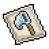  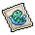 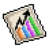 Lil' Mining Baggy, Catch Net, Mason Jar, Fishhead, Stat Graph 스탬프 |
| Wellington | Sands of Time (World 2) | 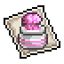 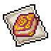 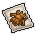 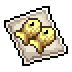 Brainstew, Arcane, Fly Intel, Holy Mackerel, Talent II 스탬프 |
| Snouts | The Stache Split (World 3) | 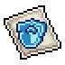 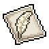 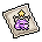 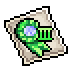 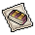 Buckler, Feather, Purp Froge, Talent III, Biblio 스탬프 |
| Crystalswine | Cryo Catacombs (World 3) | 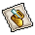 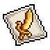 Hermes, Avast Yar 스탬프 |
| Oinkin | Donut Drive-In (World 4) | 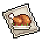 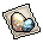 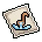 Cooked Meal, Nest Eggs, Ladle 스탬프 |
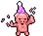 Capital P | Jelly Cube Bridge (World 4) | 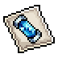 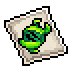 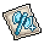 Lab Tube, DNA, Diamond Axe 스탬프 |
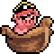 Pirate Porkchop | Cracker Jack Lake (World 5) | 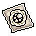 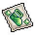 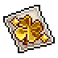 Sailboat, Divine, Sashe, Conjocharmo 스탬프 |
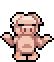 Poigu | Lampar Lake (World 5) | 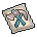 Gamejoy, Multitool 스탬프 |
| Hoov | Picnic Bridgeways (World 6) | Crop Evo, Void Sword 스탬프 |
| Sussy Gene | Above the Clouds (World 6) | Triad Essence, Summoner Stone, Void Axe 스탬프 |
| Snootie | Seaweed Street (World 7) | Little Rock, Amber, Gud EXP 스탬프 |
| Bloo Radley | Pinpoint Summit (World 7) |  Hardhat, Corale 스탬프 Hardhat, Corale 스탬프 |
베스트 퀘스트 목록 – 특수(스타) 탤런트
강력한 특수 탤런트를 잠금 해제하는 퀘스트입니다. 스탬프와 마찬가지로 계정 전체에 공유되므로 한 캐릭터로만 완료하면 됩니다.
| NPC | 위치 (월드) | 보상 |
|---|---|---|
| Picnic Stowaway | Froggy Fields (World 1) | Crystals 4 Dayys |
| Hoggindaz | Frostbite Tundra (World 3 마을) |  Printer Sampling Printer Sampling |
| Royal Worm | Wurm Highway (World 4) |  Studious Quester Studious Quester |
| Monolith | Flamboyant Bayou (World 4) |  Monolithialism Monolithialism |
베스트 퀘스트 목록 – 중요 장비
유용한 진행 장비 또는 엔드게임 장비를 보상으로 주는 퀘스트입니다. 계정에 필요한 만큼 여러 캐릭터로 완료하세요. 결국 World 5 Slab 메커니즘을 완성하려면 장비 보상이 있는 모든 퀘스트를 완료하는 것을 권장합니다.
| NPC | 위치 (월드) | 보상 |
|---|---|---|
| Woodsman | Spore Meadows (World 1) | Stump Prop |
| Picnic Stowaway | Froggy Fields (World 1) |  King of Food Trophy King of Food Trophy |
| Funguy | Winding Willows (World 1) | Silver Stopwatch |
| Keymaster | Slip Slidy Ledges (World 1) | Idle Skiller |
| Omar Da Ogar | Deepwater Docks (World 2) |   Shallow Watering, Oceanic Ring, Deepwater Trench Ring Shallow Watering, Oceanic Ring, Deepwater Trench Ring |
| Centurion | The Mimic Hole (World 2) | Gladiator Trophy |
| Fishpaste97 | Faraway Piers (World 2) |  One Pound of Feathers One Pound of Feathers |
| Loominadi | Up Up Down Down (World 2) | Literal Elephant |
| Tired Mole | Miner Mole Outskirts (World 5) | One of the Divine Trophy |
| Potti | Sleepy Skyline (World 6) | Heroic Spirit Trophy |
베스트 퀘스트 목록 – 인벤토리 가방 & 창고 상자
캐릭터 인벤토리 가방과 계정 전체 창고 상자를 잠금 해제하는 퀘스트입니다. 인벤토리 가방 B, C, D는 완료가 빠르므로 모든 캐릭터로 잠금 해제하는 것을 권장합니다. E, F, H는 시간이 훨씬 오래 걸리므로 첫 번째 캐릭터로만 완료한 뒤 World 1 메리트 상점 업그레이드를 통해 모든 캐릭터에 적용하세요.
| NPC | 위치 (월드) | 보상 |
|---|---|---|
| Scripticus | Blunder Hills (World 1 마을) | 인벤토리 가방 B & C |
| Promotheus | Vally Of The Beans (World 1) | 인벤토리 가방 D |
| Cowbo Jones | Yum-Yum Grotto (World 2 마을) | 인벤토리 가방 E, F & H, Storage Chest 4 |
| Hamish | Froggy Fields (World 1) | Storage Chest 1 |
| Krunk | Freefall Caverns (World 1) | Storage Chest 3 |
| Mutton | Freefall Caverns (World 1) | Storage Chest 5 |
| Snake Jar | The Mimic Hole (World 2) | Storage Chest 11 |
| Hoov | Picnic Bridgeways (World 6) | Ninja Chest |
베스트 퀘스트 목록 – 소모품 및 기타
중요한 유틸리티를 제공하는 퀘스트로, 보상을 늘려 진행 속도를 높이기 위해 가능한 한 여러 캐릭터로 반복 완료하는 것이 좋습니다. 보스 키와 콜로세움 티켓 퀘스트는 중요한 자원의 초기 보상과 일일 보상을 동시에 제공하므로 특히 우선적으로 완료하세요.
| NPC | 위치 (월드) | 보상 |
|---|---|---|
| Dog Bone | Encroaching Forest Villas (World 1) | Forest Villa Key (매일) |
| Djonnut | Djonnuttown (World 2) | Efaunt's Tomb Key (매일) |
| Bellows | Crystal Basecamp (World 3) | Chizoar's Cavern Key (매일) |
| Typhoon | Froggy Fields (World 1) |  콜로세움 티켓 (매일) 콜로세움 티켓 (매일) |
| Centurion | The Mimic Hole (World 2) | 콜로세움 티켓 (매일) |
| Lonely Hunter | Snowfield Outskirts (World 3) | 콜로세움 티켓 (매일) |
| Monolith | Flamboyant Bayou (World 4) | Onyx Tools & Kachow 동상 10,000개 |
| Zenelith | Doodle Reef (World 7) | Zenith Tools |
| Sad Urie | Plastic Basin (World 7) | Urie's Special Childhood Rock (콩나무 황금 음식 100만 개 잠금 해제) |